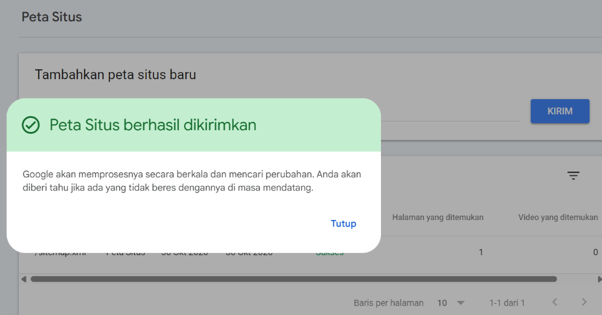

| Nama | Satria Fajar Nuralim | Mata Kuliah | Digital Marketing |
| NIM | 230102122 | Kelas | IF-7-A |
| Website | https://re-wear-landing-page.vercel.app/ | ||
| Alat Audit | Screaming Frog SEO Spider & Google Search Console | ||
Audit Technical SEO ini dilakukan pada landing page toko online RE—WEAR yang sudah aktif di platform Vercel. Tujuannya adalah untuk memeriksa apakah website memiliki kendala teknis yang bisa membuat mesin pencari sulit membaca halaman, seperti tautan rusak, judul halaman yang terduplikasi, gambar tanpa teks alternatif, atau redirect yang bermasalah. Selain itu, audit ini juga mencakup verifikasi kepemilikan website di Google Search Console serta pengiriman file sitemap.
Pengecekan teknis dilakukan dengan merayapi (crawling) alamat website langsung menggunakan Screaming Frog SEO Spider. Parameter yang diperiksa mencakup respon HTTP server, struktur judul halaman (title tag), atribut alt pada setiap gambar, serta susunan link internal dan eksternal.
Berikut adalah ringkasan hasil audit untuk empat parameter utama yang diperiksa:
| Komponen yang Diperiksa | Status | Keterangan Hasil |
|---|---|---|
| 1. 404 Broken Link | Aman (0 Link Rusak) | Semua 24 tautan di halaman (baik menu navigasi seperti #koleksi-drop dan #cara-pembersihan maupun tombol WhatsApp) berhasil diakses normal dengan kode respon 200 OK. Tidak ditemukan tautan yang mengarah ke halaman kosong atau error 404. |
| 2. Duplicate Meta Titles | Aman (0 Duplikasi) | Judul halaman dibuat tunggal dan jelas: RE—WEAR // Pakaian Pilihan Berkualitas, Bersih dan Siap Pakai. Panjang judul adalah 61 karakter, pas dengan batas tampilan hasil pencarian Google sehingga tidak terpotong. |
| 3. Missing Alt Image | Aman (0 Gambar Kosong) | Semua 10 gambar di website (foto produk jaket dan foto kurator) sudah memiliki teks alternatif (alt tag) yang mendeskripsikan isi gambar dengan jelas, contohnya Jaket Kanvas Carhartt Detroit. |
| 4. Redirect Chains | Aman (0 Rantai Redirect) | Tidak ada pengalihan halaman berulang (redirect chains). Halaman dan seluruh aset gambar serta script langsung dimuat dari server tanpa melalui proses redirect bertingkat. |
Agar mesin pencari dapat mengetahui halaman mana saja yang boleh dirayapi dan di mana letak daftar halamannya, dibuat dua file konfigurasi pada folder utama (root) website:
A. File robots.txt
File ini mengizinkan bot mesin pencari untuk membuka website dan mencantumkan alamat sitemap resminya:
User-agent: * Allow: / Sitemap: https://re-wear-landing-page.vercel.app/sitemap.xml
B. File sitemap.xml
File peta situs berformat XML yang berisi alamat halaman website, tanggal pembaruan terakhir, dan prioritas indeks:
<?xml version="1.0" encoding="UTF-8"?>
<urlset xmlns="http://www.sitemaps.org/schemas/sitemap/0.9">
<url>
<loc>https://re-wear-landing-page.vercel.app/</loc>
<lastmod>2026-10-30</lastmod>
<changefreq>weekly</changefreq>
<priority>1.0</priority>
</url>
</urlset>
Website telah didaftarkan ke Google Search Console menggunakan metode Tag HTML. File sitemap.xml juga sudah dikirimkan melalui menu Peta Situs dan berhasil terbaca oleh sistem Google dengan status Sukses.

Dari hasil audit teknis ini, landing page RE—WEAR tidak memiliki masalah teknis mendasar seperti link rusak, gambar tanpa keterangan alt, atau masalah pengalihan URL. Website juga sudah terhubung secara resmi ke Google Search Console dan memiliki file sitemap yang aktif, sehingga siap dirayapi dan ditampilkan oleh Google pada hasil pencarian.